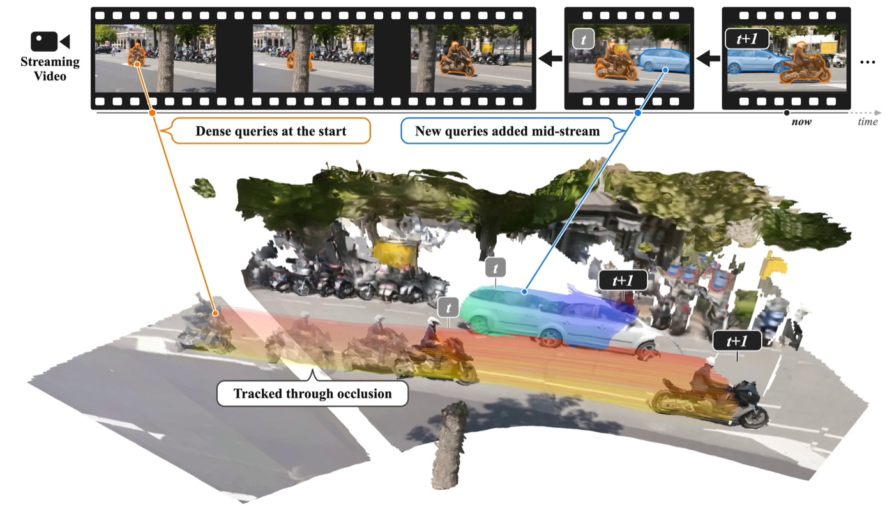

Live4D: Latent Tracking for Streaming 4D Reconstruction
Under Review, 2026
A method for dense 3D point tracking in streaming videos: as each frame arrives, it immediately predicts the current 3D position of every queried pixel using only the frames seen so far. Tracks are decoded from the causal memory of a streaming 3D reconstruction model, so new queries can be added at any time and points stay tracked through occlusion.